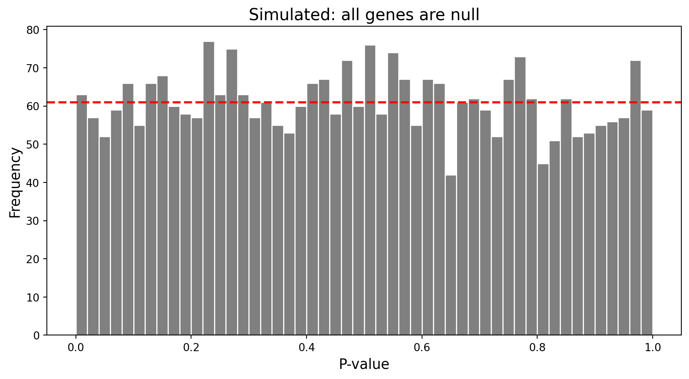
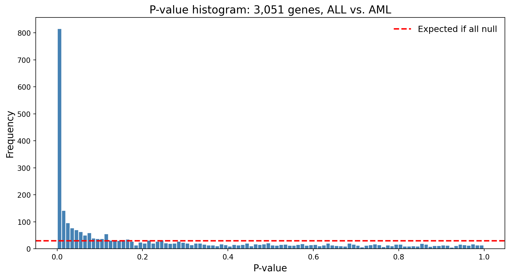
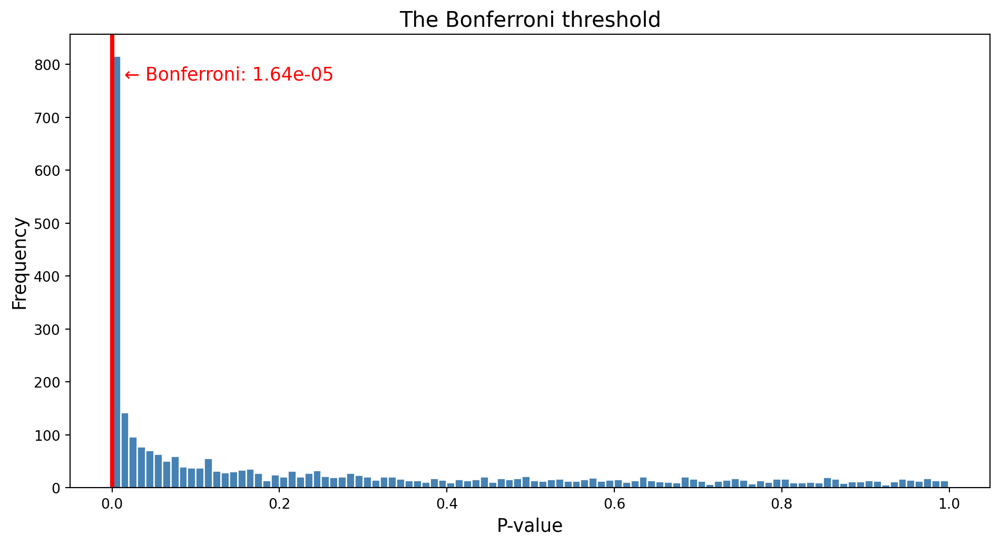
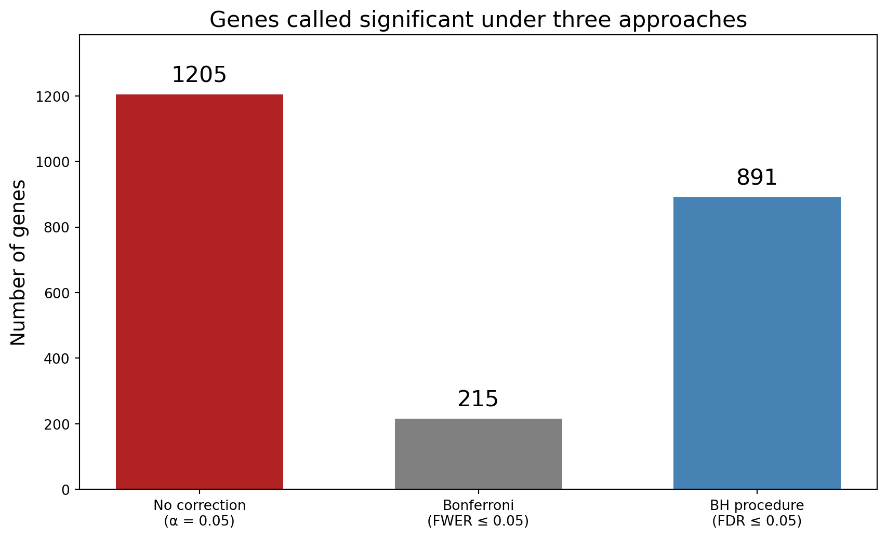

The Gene That Wasn’t There
Lecture 1
Invalid Date


8,000 citations
2003–2018: Hundreds of replication attempts
Some positive. Some negative. Some null.
Meta-analyses disagreed with each other.


How does a false positive survive for fifteen years?
The Golub Dataset

| Patients | 72 |
| Genes | 3,051 |
| ALL | 47 |
| AML | 25 |
| Ratio p/n | ~42 |
More variables than observations. 42× more.
\[3{,}051 \times 0.05 = 153\]
153 “significant” genes from pure noise.
The P-Value Histogram
What “nothing” looks like
The Golub data

Three things this histogram tells you
Is there signal? Spike near zero → yes.
How much? The flat part estimates π₀ (fraction of null genes).
Is your analysis trustworthy? Flat part should be flat. If not, something is wrong.
Plot the histogram before you do anything else.

Bonferroni and Family-Wise Error Rate Control
Bonferroni correction
\[\frac{0.05}{3{,}051} \approx 1.6 \times 10^{-5}\]
Controls the family-wise error rate: P(any false positive) ≤ 0.05
Where is the threshold?



The gap
| Approach | Genes significant | Problem |
|---|---|---|
| No correction | Thousands | Hundreds of false positives |
| Bonferroni | A handful | Most real signal missed |
You need a different question.
Two questions
FWER (Bonferroni): Did I make any false positive?
\[P(\text{at least one false positive}) \leq \alpha\]
. . .
FDR (Benjamini-Hochberg): What fraction of my discoveries are false?
\[E\!\left[\frac{\text{false positives}}{\text{total discoveries}}\right] \leq \alpha\]
Three approaches, one dataset

What a Field-Wide False Positive Looks Like
How false positives survive
Publication bias Studies finding nothing sit in file drawers.
. . .
Winner’s curse To cross the significance threshold in a small sample, the observed effect has to overshoot the true value.
. . .
Garden of forking paths Many defensible analytical choices, each a branch point. The effective number of tests is much larger than reported.
Meanwhile, GWAS got it right
| Candidate genes | GWAS | |
|---|---|---|
| Tests per study | 1–few | ~1,000,000 |
| Correction | Usually none | 5 × 10⁻⁸ |
| Depression loci found | 0 (replicated) | 100+ |
Same biology. Different statistical framework. Different results.
The 5-HTTLPR story isn’t a story about bad scientists.
. . .
It’s a story about what happens when a field’s statistical framework doesn’t match the scale of its questions.
. . .
The framework exists.
That’s what we’ll build in Lecture 2.
High-Dimensional Data Analysis Workshop | BTP